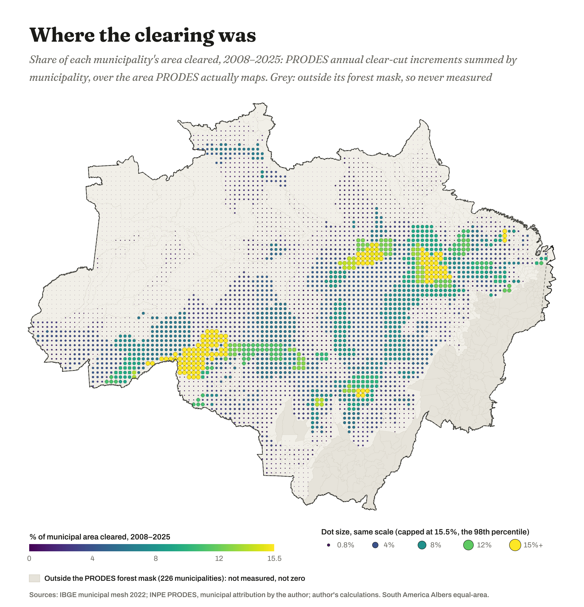
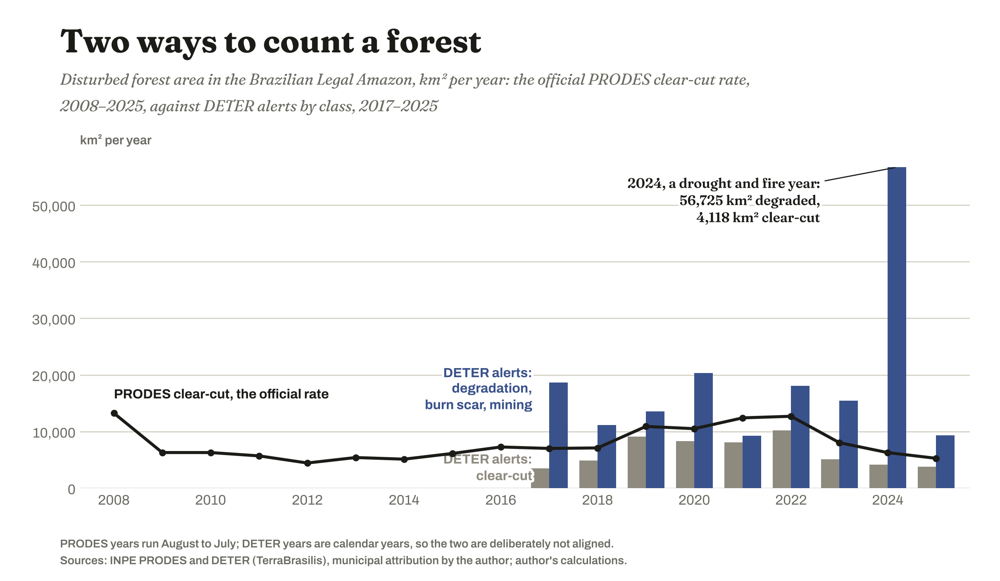
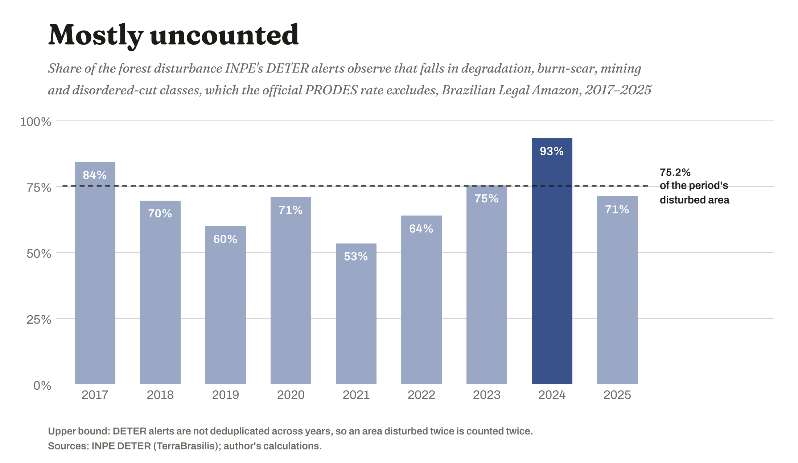
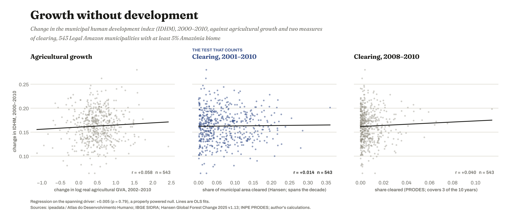
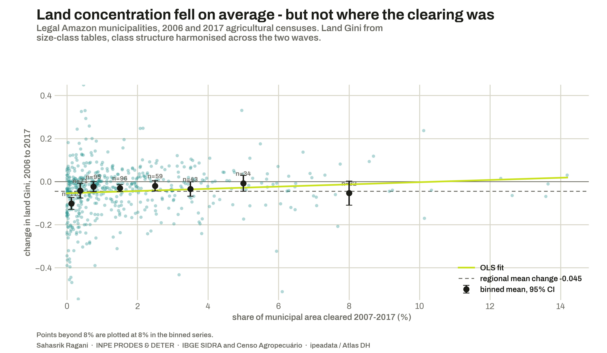
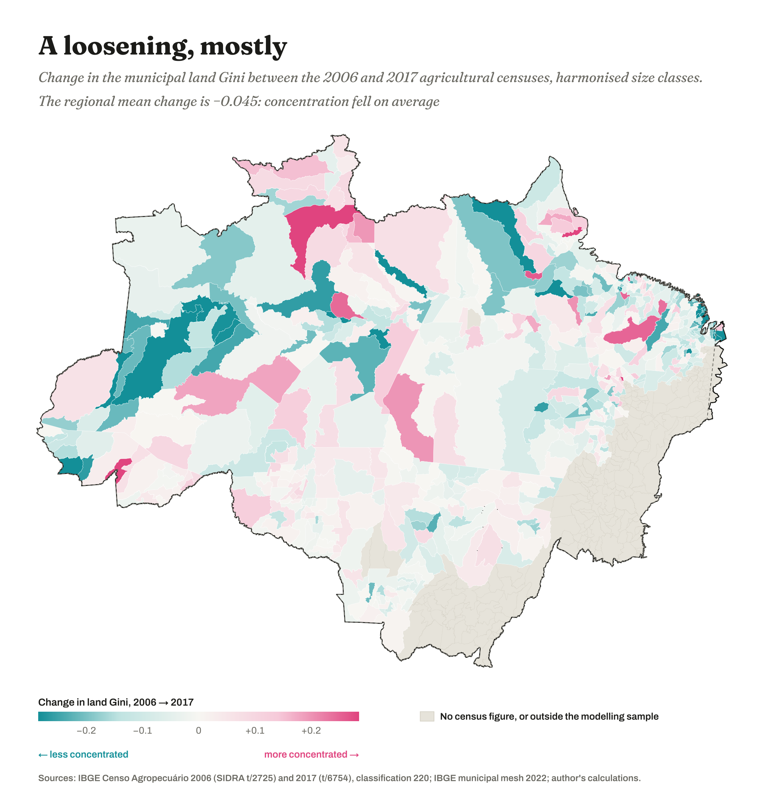
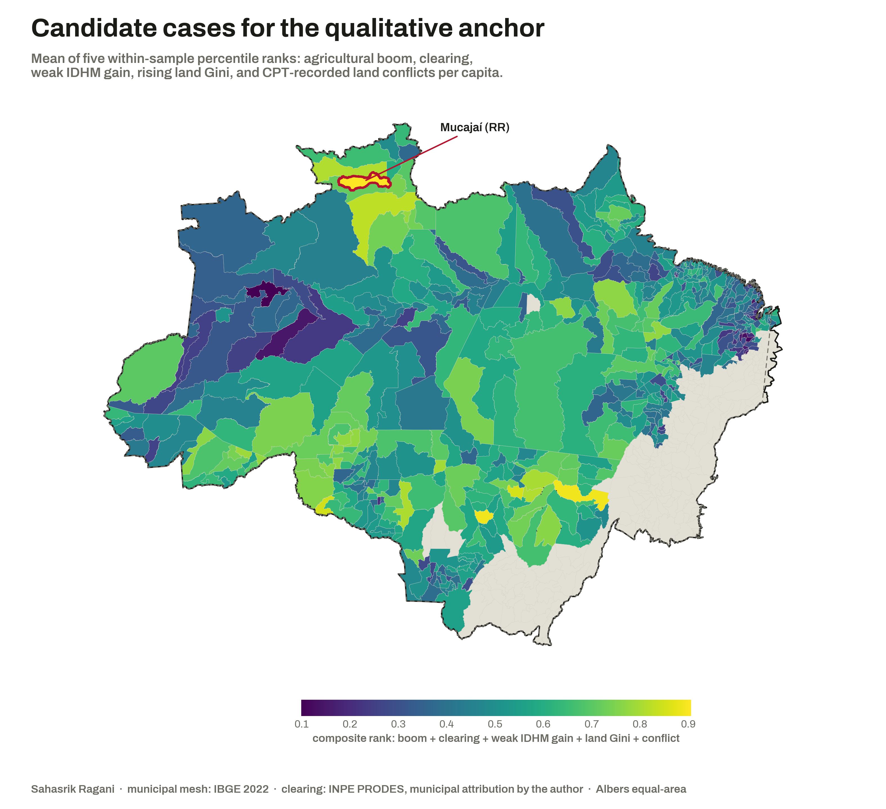

How to read this page
Every figure here has a second caption
The first caption on each figure says what is plotted. The paragraph underneath says what the figure is doing — which denominator it chose, where it put the midpoint of a colour scale, what it excluded and why. Those choices are not housekeeping. A clipped scale decides which municipalities look extreme; a diverging palette decides where "normal" sits and therefore who is doing something unusual. The only protection a reader has is that somebody wrote down which way the choice went, so that is what this page is for.
1 — The region
The administrative Amazon against the ecological one

What it is doing: defining the sample. The 226 pale municipalities are Cerrado and Pantanal inside a 1953 planning boundary, and the official deforestation product cannot map clearing there at all. Including them with a clearing value of zero would estimate an average over a population containing cases where the outcome is impossible by construction, which attenuates every coefficient in the study. The five per cent biome threshold that produces the 546-municipality modelling sample is therefore a claim about what the object of study is, not a data-cleaning step.

What it is doing: three decisions, and the third is the uncomfortable one. The denominator is the municipality's area inside the Legal Amazon rather than its whole area, which matters for the twenty Maranhão municipalities the boundary cuts through — using the whole area made Morros, 4.7% inside, look twenty-one times less deforested than it is. The grey is exclusion rather than a low value. And the colour scale is clipped at the 98th percentile, because without the clip two or three extreme municipalities stretch the ramp until the entire arc collapses into one indistinguishable dark band. Clipping buys legibility and pays for it by flattening the extremes into the same yellow as municipalities doing half as much.
2 — What gets counted as deforestation
Two instruments, one agency, different answers

What it is doing: refusing to harmonise two series that are not the same measurement. It would be easy to put both on a common calendar and let the reader compare heights, and it would be wrong — one is an annual mapped increment, the other an alert system whose areas are not level-comparable. The misalignment is left visible on purpose.

What it is doing: stating an upper bound and saying so. Alerts are not deduplicated across years, so an area disturbed in two successive years is counted twice and the share is inflated by an unknown amount. The definitional boundary is not in doubt even if the exact percentage is — degradation, burn scar and mining are excluded from the official rate by construction, not by accident of measurement.
3 — Growth and welfare
The ladder, and the null that took a 5.8 GB download to earn

What it is doing: showing every rung of the ladder rather than the surviving one. Four of the fifteen estimates plotted are significant and eleven are not, and publishing the whole grid is what makes the four worth anything. The population row is the one to read carefully: it is significant at p = 0.012 and it amounts to −0.07% for a one-standard-deviation increase in clearing, which is a small effect measured precisely. Its job is to block a misreading of the per-capita result, not to carry a claim.

What it is doing: keeping a mistake on the page. The right panel is the specification I started with, where the clearing window covered three of the outcome's ten years — a driver that does not span its own outcome, which cannot test anything. The middle panel is the corrected version. Both are shown because the difference between them is the difference between an uninformative null and a real one, and the standard errors fell by a factor of five when the window was fixed.
4 — Land
Concentration fell, except where the clearing was

What it is doing: leading with the result that argues against the hypothesis. Regionally the land Gini fell, by a mean of 0.045, with only 38% of municipalities rising. That is stated first because the conditional result underneath it — clearing predicting a rise in the share of farmland held in units of 1,000 hectares or more, at +0.875 with p = 0.007 — is only credible if the unfavourable headline comes before it. Two corrections inside the Gini are worth knowing: producers reporting no land are placed at the zero-area end, which moved the regional mean by around 0.15 of a Gini point, and 2017's split top classes are collapsed to the 2006 structure, without which the two censuses are not the same instrument.

What it is doing: making an argument with a midpoint. The palette diverges from white and white sits at zero change, which declares that "no change" is the natural reference every municipality is judged against. Centre the same scale on the regional mean of −0.045 instead and roughly half the map changes colour: places currently reading as mildly concentrating would read as concentrating faster than the region around them. Same data, same municipalities, different politics. The grey is also doing double duty here, covering two different problems — outside the sample, and no census figure — with one colour, which is a defect rather than a choice.
5 — Case selection
The index that found the longest-suffering place and called it the most intense

What it is doing: asserting that five incommensurable things can be averaged. A composite of percentile ranks treats a municipality in the 90th percentile for clearing and the 70th for conflict as equivalent to one placed the other way round, and ranks discard magnitude entirely, so the top-ranked municipality on any criterion might be barely ahead of the second or ten times ahead. The conflict criterion is also computed over only the seven observed years within 2007–2017, because the conflict archive has gaps.
And then the index led somewhere it did not intend
Reading what was actually recorded in Mucajaí: of its 162 conflict occurrences, 91 carry the same case name — the Yanomami Indigenous Territory, running continuously from 2007 to 2025. Neighbouring Caracaraí records 83 of its 138 under that same name. Across Roraima the median municipality holds 58% of its entire conflict record in one single case, against 5–16% in every other state in the region.
So a conflict count is partly a measure of duration rather than intensity, and any ranking built on raw counts will put the places where one dispute has gone longest unresolved at the top. Those call for different responses: a long-unresolved invasion needs a legal or demarcation remedy, a cluster of new disputes needs presence on the ground. The measure cannot tell them apart, and it misfires hardest on Indigenous territories because that is where the long cases sit.